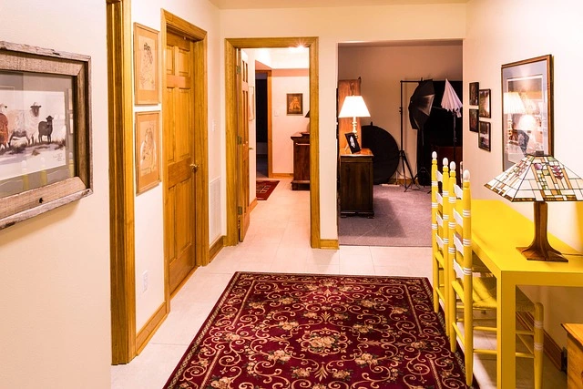

In sintesi
Se la casa non si vende a Padova, il listino è spesso solo uno dei fattori. Percorso F (già in vendita): diagnostica su OMI ADE, qualità annuncio, dossier documentale, mandato e visite. Righetto offre consulenza gratuita per ripianificare — diverso da tempi medi di vendita e da home staging da solo.
Distinzione editoriale: Fatto — APE obbligatorio, registrazione contratti, fasce OMI pubblicate dall'ADE. Analisi — perché un immobile fermo segnala debolezza sul mercato padovano selettivo del 2026. Previsione — nessuna garanzia di giorni di vendita; dipende da prezzo credibile, prodotto e domanda del semestre.
Cosa può fare Righetto
Il quesito: Cosa fare se la casa non si vende?
- Consulenza gratuita — Diagnostica percorso F con referente Righetto (consulenza)
- Valutazione — Secondo parere su listino e comparabili (valutazione)
- Servizio vendita — Mandato, marketing, trattativa (servizio vendita)
- Hub proprietari — Percorsi A–L e guide (proprietario)
Mediazione concordata in sede — nessun listino online. Tel. 049.8843484 · consulenza gratuita.
Percorso F: la casa è già in vendita ma non si chiude
Se avete già un annuncio attivo da settimane o mesi senza proposte serie, siete nel percorso F del funnel Righetto: non siete alla prima valutazione (A) né al «penso di vendere» (B). Avete investito tempo, forse più agenzie, e il mercato vi sembra muto. In realtà, nel Padovano del 2026, la domanda esiste ma è selettiva: compratori confrontano decine di schede online, filtrano per prezzo/mq, classe energetica e foto, e prenotano visite solo su immobili credibili.
Questo articolo non ripete la guida generica sui tempi di vendita a Padova: qui l'obiettivo è un piano di ripartenza quando siete già sul mercato. Complementare anche a venditore «so tutto io» e a strategie vendita Padova 2026, con angolo diagnostico percorso F.
Righetto accompagna proprietari dal 2000 con sede a Limena (Via Roma 96) e copertura su Padova città e provincia. Il compenso di mediazione si concorda sempre in sede — nessun listino percentuale online.
Segnali che il problema non è solo «mercato lento»
Alcuni indicatori oggettivi suggeriscono che serve cambiare strategia, non aspettare il prossimo trimestre:
- Zero visite qualificate in 30–45 giorni con annuncio su portali principali.
- Solo richieste generiche («info») senza richiesta di sopralluogo o mutuo.
- Comparabili venduti in zona a prezzo inferiore al vostro con caratteristiche simili.
- Ribassi già effettuati senza aumento visite — il mercato ha «scontato» la credibilità dell'annuncio.
- Stesso immobile su più portali con testi o prezzi leggermente diversi.
- Feedback ripetuto in visita su odori, disordine, lavori visibili, planimetria non chiara.
Se riconoscete almeno tre punti, passate dalla speranza passiva a una diagnostica strutturata. L'Osservatorio del mercato immobiliare ADE e ISTAT aiutano sul contesto macro Veneto; per il singolo appartamento servono comparabili locali e sopralluogo.
Prezzo, OMI e comparabili: quando il listino è la leva principale
Il prezzo resta la variabile più visibile, ma va calibrato con metodo — non con tagli emotivi ogni due mesi. Consultate OMI ADE per la zona omogenea del vostro immobile (centro storico, Arcella, Chiesanuova, cintura…): minimo, medio e massimo sono riferimenti ufficiali, non il prezzo finale di rogito.
Errore frequente percorso F: basarsi su annunci ancora invenduti invece che su transazioni chiuse o comparabili venduti negli ultimi 6–12 mesi. Gli annunci alti trainano verso l'alto solo sulla carta; il mercato punisce chi resta fuori cluster.
Guida metodo: valutazione immobile Padova. Se avete già avuto perizie discordanti, servizio valutazioni Righetto chiarisce obiettivi (vendita vs mutuo acquirente).
| Domanda | Azione se «no» |
|---|---|
| Listino entro fascia OMI difendibile? | Rivalutazione comparativa + sopralluogo |
| Ultimo ribasso < 60 giorni fa? | Prima sistemare annuncio/documenti, poi prezzo |
| Prezzo coerente su tutti i portali? | Allineare con referente unico |
| Acquirente tipo individuato? | Ricalibrare titolo annuncio e canali |
Non pubblichiamo €/mq medi inventati per Padova: ogni microzona ha dinamica propria. Per ville e immobili di pregio in centro, il confronto richiede campione ristretto — vedi sezione fascia alta.
Annuncio, foto e coerenza tra portali
Un immobile invenduto spesso ha un problema di prodotto percepito, non solo di cifra. Nel 2026 la prima visita avviene sullo schermo: foto scure, pochi scatti, assenza planimetria, titolo generico («bilocale Padova») non distinguono la vostra offerta.
Standard minimo da verificare:
- Copertura ambienti — soggiorno, cucina, camere, bagni, esterni, box.
- Luce e ordine — equivalente a una visita reale curata.
- Planimetria leggibile con metrature coerenti con catasto.
- Descrizione onesta — spese condominiali, lavori in corso, orientamento.
- Un solo prezzo e testo master — evitare versioni parallele.
Se l'immobile è pubblicato in non esclusiva da più agenzie, è facile divergenza di prezzo e foto obsolete. Approfondimento: mandato esclusivo Padova.

Documenti e conformità: blocchi silenziosi
Molte trattative muoiono in due diligence: planimetria non conforme, APE assente o scaduto, assenza di certificazioni impianti dove richieste, delibere condominiali non comunicate. L'acquirente con mutuo non può chiudere; quello cash chiede sconto aggressivo.
Checklist rapida percorso F:
- Visura catastale e planimetria allineate allo stato di fatto.
- APE valido per compravendita abitativa.
- Ultimi verbali condominiali e spese ordinarie documentate.
- Pertinenze (box, cantina) con subalterni corretti.
- Atto di provenienza e eventuale successione regolarizzata.
Guida trasversale: documenti vendita casa. Sanare prima dell'annuncio costa meno che scoprire il difetto a compromesso.
Mandato, referente unico e ripartenza con l'agenzia
Cambiare agenzia non è obbligatorio, ma cambiare piano sì. Se il mandato attuale non prevede revisione marketing, report visite e strategia prezzo a 30/60 giorni, negoziate un reset contrattuale o valutate un nuovo incarico con obiettivi misurabili (visite/mese, feedback scritti, revisione listino).
L'esclusiva concentra responsabilità e messaggio; la non esclusiva moltiplica annunci ma spesso diluisce l'impegno. Scelta da concordare in sede — compenso Righetto sempre nel mandato scritto, senza percentuali pubblicate online.
Per chi vende da privato da mesi: errori vendita Padova e passaggio a professionista con servizio vendita.
Presentazione, home staging e qualità visite
Se le visite ci sono ma non arrivano offerte, il feedback in visita è oro: chiedete all'agente un report sintetico (prezzo percepito, confronto con altri visti, ostacoli). Spesso emergono dettagli risolvibili — verniciatura, depersonalizzazione, piccoli lavori, ordine cantina.
L'home staging non è obbligatorio per legge, ma può accelerare la percezione di valore: guida home staging Padova. Coordinate ditte con l'agenzia; evitate lavori strutturali non comunicati in annuncio.
Per visite: luce naturale, assenza odori, documenti a portata, preferibilmente venditore assente durante il sopralluogo per non pressare l'acquirente.
Centro storico, ville e immobili oltre la media
A Padova, centro storico e ville hanno bacino più ristretto e cicli di vendita più lunghi se il listino non è allineato al campione di pregio. Investitori e acquirenti fascia alta chiedono trasparenza su vincoli, rendimenti locativi potenziali (senza promesse), stato impianti e costi di gestione.
Righetto tratta anche incarichi riservati e valutazioni dedicate: valutazione vendita riservata Padova. Non confondete «tempo sul mercato lungo» con «prezzo di lusso giustificato» senza comparabili omogenei.
Piano operativo 90 giorni di ripartenza
Schema proposto ai proprietari percorso F (da adattare caso per caso):
- Giorni 1–7: audit listino vs OMI + 5 comparabili venduti; allineamento prezzo portali.
- Giorni 8–21: refresh foto/planimetria/descrizione; dossier documentale completo.
- Giorni 22–45: campagna visite mirata; raccolta feedback scritto.
- Giorni 46–60: decisione su staging o micro-lavori; eventuale aggiustamento listino motivato.
- Giorni 61–90: valutazione mandato/esclusiva; trattativa su lead qualificati con mutuo.
Se a 90 giorni non ci sono segnali (visite qualificate + almeno una trattativa), serve revisione radicale prezzo o prodotto — non un quarto ribasso simbolico.
Quando ha senso una consulenza Righetto se avete già un'agenzia
Non sostituiamo il mandato altrui senza regole deontologiche e contrattuali. Ma una consulenza gratuita può offrire secondo parere su listino, annuncio e piano — utile se siete bloccati. Percorso: landing consulenza immobiliare gratuita, telefono 049.8843484, o hub proprietario immobile.
Chi vende trova in Righetto un alleato: dati verificabili, accompagnamento, trasparenza sul compenso in sede — non portale anonimo.
Padova città e provincia: la stessa diagnosi, contesti diversi
Un trilocale in Arcella non compete con uno in Centro storico né con una villetta a Abano Terme o Vigonza. Quando la casa non si vende, il primo errore è confrontarsi con annunci di zone diverse. Usate la scheda zona pertinente — esempio Arcella, Chiesanuova, Limena — per capire domanda e tipologie ricorrenti.
Nella cintura nord-ovest (Limena, Cadoneghe, Rubano) compratori spesso cercano box, giardino e collegamenti verso tangenziale. In centro storico contano vincoli, accessi e costi di gestione. Se il vostro listino è calibrato su un comparabile in altra microzona OMI, il mercato vi ignora senza spiegazioni verbali.
Per immobili commerciali o misti la logica invenduto cambia ancora: tempi più lunghi, due diligence urbanistica più severa. In quel caso il percorso F va affiancato a consulenza dedicata, non a ribassi «residenziali» copiati da guide generiche.
Costo opportunità di restare invenduti
Ogni mese sul mercato non è neutro: rate mutuo, IMU, spese condominiali, assicurazione, manutenzione ordinaria e — spesso sottovalutato — usura psicologica del venditore che rimanda decisioni. Non pubblichiamo cifre medie €/mese per immobile senza campione verificabile sul vostro caso; in consulenza si costruisce un prospetto personalizzato con i vostri numeri reali.
Approfondimento costi accessori vendita: costi vendere casa Padova. Distinzione importante: costi di transazione (notaio, imposte) ≠ costo di restare invenduti (holding).
Trattative fantasma e curiosi
Se ricevete solo messaggi generici da portali («interessato, mandi prezzo») senza visita, spesso non sono lead qualificati. Un piano percorso F include filtro telefonico: verifica budget, mutuo, tempi rogito. Righetto qualifica le richieste prima del sopralluogo per non saturare il venditore con appuntamenti improduttivi.
Offerte verbalmente basse senza caparra non vanno interpretate come «mercato crollato»: possono essere tentativi isolati. Valutate solo proposte con qualifica finanziaria e coerenza con comparabili recenti.
Eredità, coeredi e immobile fermo
Se l'immobile invenduto arriva da successione non ancora pacificata, acquirenti e banche si fermano. Percorso collegato: successione immobiliare Padova. Allineare quote, eventuale divisione e poteri di firma prima di refresh marketing evita mesi persi.
Vendere o affittare mentre l'annuncio non decolla
Alcuni proprietari percorso F valutano locazione temporanea. Non è sempre la soluzione migliore: vincoli contrattuali, fiscalità, stato dell'immobile per affitto e obiettivo finale di vendita vanno modellati insieme. Guida: vendere o affittare Padova e rendimento affitto — senza promettere rendimenti percentuali non verificati sul vostro immobile.
| Commento acquirente | Leva correttiva |
|---|---|
| «Carino ma caro rispetto ad altri visti» | Listino o comparabili da rivedere |
| «Buon prezzo ma cantina umida / lavori» | Prodotto e staging, non solo prezzo |
| «Manca planimetria chiara» | Annuncio e dossier |
| «Condominio preoccupa» | Trasparenza verbali e delibere |
| Nessun feedback — zero visite | Annuncio, prezzo, visibilità portali |
Open house e visite coordinate
In alcune tipologie (ville, immobili di metratura elevata) conviene concentrare visite in finestre open house con agente presente, invece di appuntamenti singoli sparsi. Riduce no-show e permette confronto diretto tra feedback di più visitatori nello stesso giorno. La scelta dipende da zona, privacy del venditore e mandato: va scritta nel piano marketing, non improvvisata.
Digital e recensioni dell'agenzia
Acquirenti cercano anche la credibilità del referente: recensioni verificabili, risposta alle richieste entro 24 ore lavorative, coerenza tra sito agenzia e portali. Righetto espone 127 recensioni Google (media 4,9/5) — dato verificabile — e non promette tempi di vendita garantiti.
Privacy, dati lead e trasparenza
Quando richiedete consulenza via form sul sito Righetto, i dati servono a ricontattarvi per il percorso F — non vengono venduti a terzi. Il sito rispetta Reg. UE 2024/1689 su strumenti di supporto (barra trasparenza, informativa privacy). Nessun modello linguistico sostituisce la valutazione umana in agenzia: la stima online è educativa, il sopralluogo resta il passo decisivo.
Per immobili di fascia alta o vendite riservate, valutate canali che limitano esposizione pubblica eccessiva: valutazione vendita riservata.
Checklist finale percorso F (stampabile)
- Listino confrontato con OMI e almeno cinque comparabili chiusi o venduti.
- Prezzo identico su tutti i portali e sul sito agenzia.
- Foto aggiornate, planimetria, APE e descrizione senza omissioni rilevanti.
- Dossier documentale pronto per due diligence mutuo.
- Mandato con referente, report visite e revisione a 30/60 giorni.
- Feedback visite raccolto e tradotto in azioni (prezzo vs prodotto).
- Piano 90 giorni scritto con obiettivi misurabili.
- Consulenza prenotata se due cicli di revisione non producono visite qualificate.
Se superate la checklist e il mercato resta muto, il problema è quasi sempre posizionamento prezzo/prodotto rispetto al campione — non «mancanza assoluta di compratori» nel Padovano.
Mutuo acquirente e clausole sospensive
Parte delle trattative percorso F si interrompe perché l'acquirente non ottiene mutuo entro la clausola sospensiva — non perché rifiuta il prezzo. Come venditore potete chiedere lettera di interesse bancaria prima di bloccare date per compromesso. Righetto segnala la pratica in trattativa; le condizioni restano tra acquirente e istituto di credito.
Se il vostro immobile ha difetti che spaventano perizia bancaria (non conformità, APE basso senza piano miglioramento), sanate o prezzate il rischio prima del refresh annuncio — altrimenti ripetete visite che non convertono.
In consulenza percorso F Righetto incrocia anche segnali di domanda locale (Università, pendolarismo Mestre-Venezia, famiglie in cintura) senza promettere tempi fissi: servono per capire se il vostro immobile parla al compratore giusto o a un segmento troppo ristretto per il listino scelto. Portate in appuntamento l'elenco degli annunci comparabili che avete già consultato: accelera la diagnosi.
Prossimi passi
- Compilate la checklist prezzo e annuncio sopra.
- Richiedete consulenza percorso F o valutazione.
- Allineate documenti prima del prossimo ribasso.
- Leggete tempi vendita Padova per aspettative realistiche sul timing totale.
- Per mandato: mandato esclusivo e servizio vendita.
Cross-link: zona Padova centro storico · costi vendere casa · agenzia Padova.
Gruppo Immobiliare Righetto opera dal 2000 su 101 comuni, con oltre 350 immobili gestiti e 98% di soddisfazione clienti (127 recensioni Google, media 4,9/5). Il compenso di mediazione si concorda in sede — nessun listino percentuale online.
Ultimo aggiornamento: 9 ottobre 2026. Fonti: OMI e Osservatorio ADE, ISTAT. Nessun dato €/mq inventato; nessuna percentuale mediazione online.